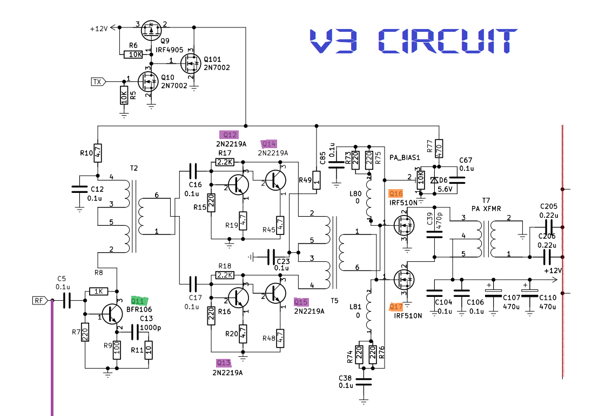
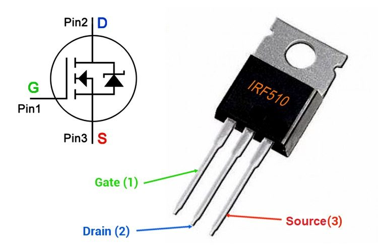
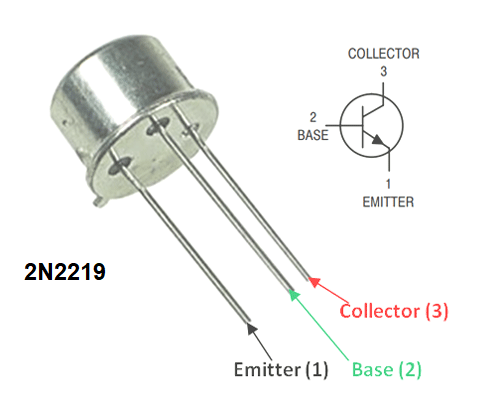

No RF output#
The radio keys (the TX indicator lights, the relay clicks) but little or no power comes out. Work through the software checks first: most "dead" radios are a setting. Then the hardware checks below narrow it down to a stage of the PA chain.
Always test into a 50 Ω dummy load with a wattmeter, never into an antenna, and keep transmissions short until you know the PA is healthy.
Check the settings first#
- SWR protection tripped? A trip holds the drive at 1 % until cleared (Transmit → SWR protection). Clear it, and find out why it tripped.
- Band plan. With a country plan set, the radio won't key outside it (Band plan).
- Drive and mode. Drive at 0, or a voice mode with no microphone audio (Mic gain at 0, the wrong mic path), gives no power. Tune sends a carrier regardless of the mic: start there.
- Battery protection holds the power down on a low supply (Power & battery).
- Calibration. A band whose PA power calibration is far too low gives almost no power on that band only. Restoring a backup from another radio brings its calibration with it.
Let the radio test itself#
More → Diagnostics (Diagnostics) measures the hardware for you, into a dummy load:
- PA health measures the PA's idle (bias) current and the power, current and efficiency on every band. Almost no idle current points at the bias or an open MOSFET; one weak band at a low-pass filter; all bands weak at the PA or its supply.
- LPF sweep finds a damaged or wrongly built output filter.
- SWR bridge check shows whether the power meter itself reads correctly.
If you replace the MOSFETs, set the PA bias before anything else.
Hardware checks (sBitx V3)#
These notes come from the sBitx 64-bit project wiki and may not be accurate for every board. Disconnect the power before every resistance or continuity test, and take care around the PA when it is powered.
To get inside, see Opening the case.

The full V3 PA schematic: v3-pa-circuit.png.

Look first#
Burn marks on the IRF510s or transistors, cracked or bulging capacitors, discoloured resistors, damaged or loose transformer windings, and cold or broken solder joints. Replace anything that looks wrong before measuring.


The IRF510 MOSFETs (Q16, Q17)#
A shorted IRF510 gets hot and draws a lot of current even at the lowest drive (PA health shows a high idle current). A MOSFET damaged by heat may simply not amplify: no extra current, no heat.
With the power disconnected, on each IRF510:
- Continuity (diode or continuity mode) between gate–drain, gate–source and drain–source: there should be none. A beep or a low reading means a short.
- Drain to source (resistance mode, nothing on the gate): high resistance, ideally open.
- Diode test red lead on the source, black on the gate: note the reading; reversed, a good MOSFET reads high or OL.
The driver transistors#
With the radio transmitting a carrier, the base–emitter voltage of Q11 (BFR106) and Q12–Q15 (2N2219A) should be about 0.6–0.7 V. Much lower or higher points at that transistor or the resistors and capacitors around it.
The T/R switch (PA supply)#
When transmitting, the PA gets +12 V through Q9 (IRF4905), switched by Q10 and Q101 (2N7002):
- Q9: about 12 V on its drain (the metal tab) while transmitting. Always on suggests a short; always off, look at Q10.
- Q10: turns on while transmitting and pulls Q9's gate to about 0 V (VGS ≈ −12 V), which turns Q9 on.
- Q101: its gate should be high (~12 V) while receiving and low (~0 V) while transmitting; its source is always at ground. A drain that stays high when it shouldn't suggests a faulty Q101.
Supply rails#
- +12 V: measure at the drains of Q16 and Q17. Too low: check the supply and look for a short.
- HV rail: measure it and check D20–D25, C201 and the parts around them for a fault or an unusual voltage drop.
With an oscilloscope#
Follow the signal from the input to the antenna jack:
- Q11 (BFR106) input: the RF should be there. If not, the fault is before the PA.
- Q12–Q15 (2N2219A pre-drivers): the signal should be larger here. Missing: a transistor or its bias.
- PA bias: at R75, R77 and D6 (5.6 V Zener), about 5.6 V on D6's banded side while transmitting.
- Gate drive on Q16 and Q17: weak or missing, check the driver and transformer T5.
- Output transformer T7: no output, check its windings for continuity.
- Low-pass filters (L31–L41, C301–C308) and the antenna network (L402, L403): signal before but not after points at a filter part or a joint (the LPF sweep finds most of these).
After replacing a part, check the idle current and set the bias before going back to full power.